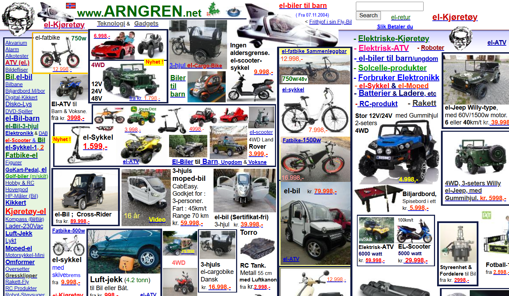
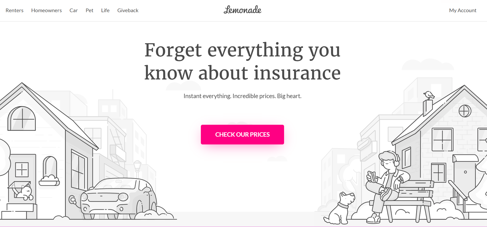
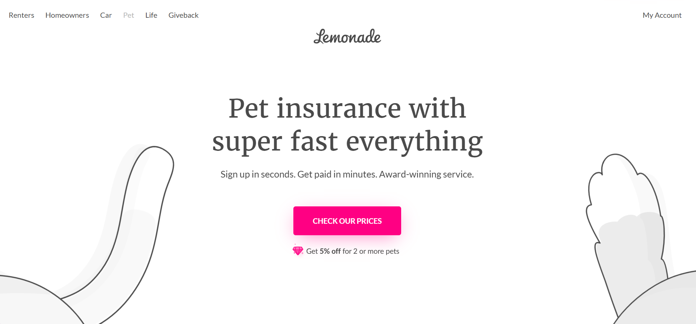

Using Typography
Typography is a very significant part of making a great webpage. While choosing typefaces is a big part of it making sure things aren't cluttered and the important information shines. Arngren's page is one such site that struggles with this. To start there's no homepage with information explaining what they do or how to contact them. There's so much going on between the multitude of images and text that I don't even know where to look. They have no type of hierarchy for their text whatsoever so even if I knew what this site was for it'd take me so long to find what I need. The site uses so many different fonts and the text changes color with seemingly no plan in mind. It's all just so overwhelming that it makes me wanna click away immediately
Balancing the amount of information on the page so you get your message across without overwhelming the reader can take practice but Lemonade Insurance has mastered this balance beautifully. It uses a monochromatic scheme which some people might find boring but they add to the appeal by including simple yet adorable artwork. The simplicity of the art and it being outta the way and near the edges of the page means it doesn't distract from the text. The navigation is easy to find and the more relevant text is big and bold while the rest is smaller to help guide our eyes throughout the page. The company goes further to help draw your attention to the important areas by using pink as a huge pop of color on the black and gray background. Much of the text uses a serif or sans-serif typeface so it's easy read except for the company's name. By making it the only strikingly different typeface it shows it's importance. The script like typeface it uses gives it a fun and cute feel to match the artwork but isn't overly eccentric so it still feels professional for a company that sells insurance. I hope this helps you in your own typography journey as it did mine
 